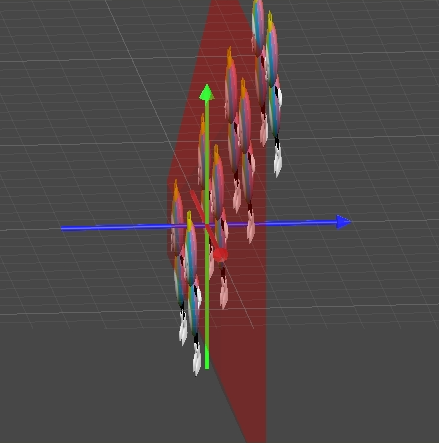
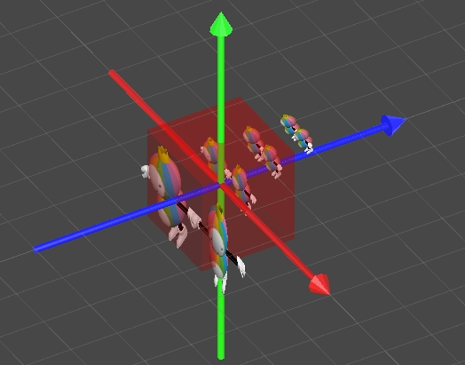
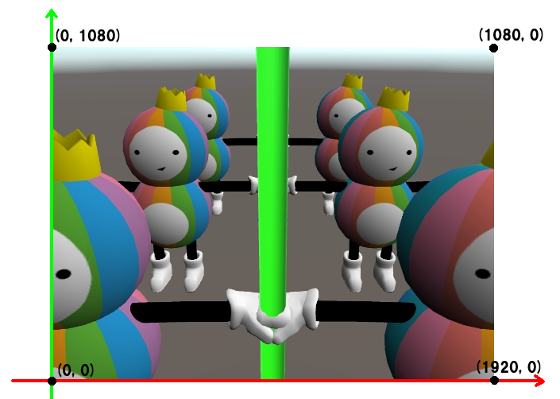
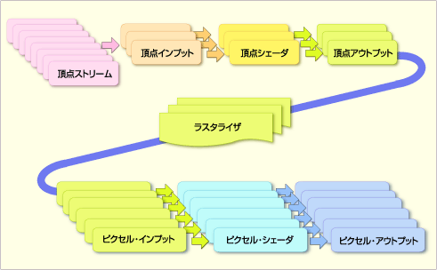
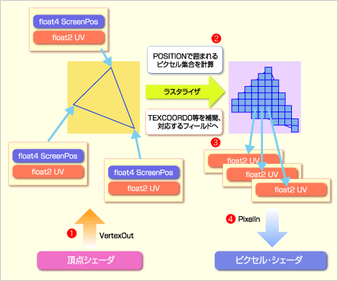
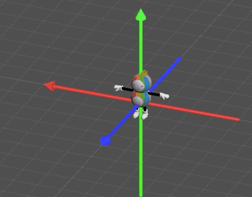
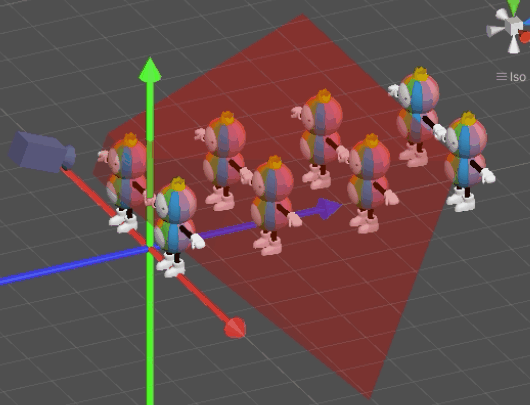
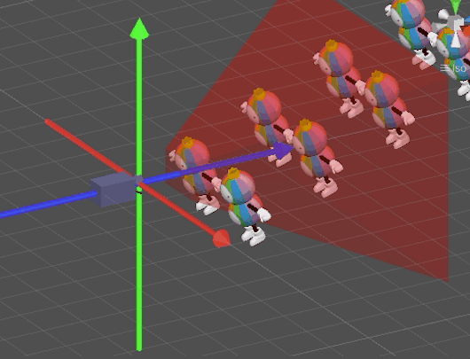
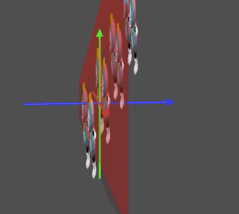
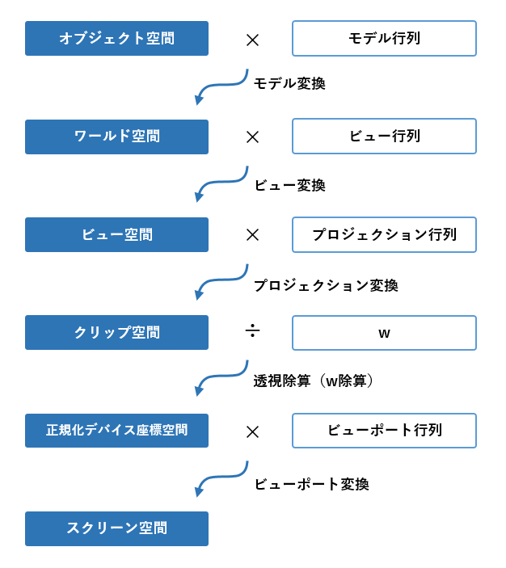

座標空間と変換
コンピューターでモノの場所を表すには座標を使います（(x=2, y=0, z=5)といったように)。
そのとき、座標空間はいくつもの種類が考えられます。
なお、「座標空間」は英語で「Coordinate Space」といいます。
また、この資料では「空間」と呼びますが「座標系」という単語も同じ意味です。
例：「ワールド座標系」は「ワールド空間」と同じものを指しています。
これから、座標空間の説明を図で示しながら説明していきます。
次のようなシチュエーションを説明していきます。
モデリングソフトでモデリングするとき、普通はキャラクターの中心や足元を原点(0, 0, 0)にして、作成します。
このとき、各頂点の位置を表している空間が「オブジェクト空間」です。
「モデル空間」や「ローカル空間」と呼ぶ場合もあります。
3Dモデルをゲームの世界に配置します。
ゲームの世界では原点(0, 0, 0)が決まっており、各オブジェクトは、原点からどれくらい離れているかで場所を表します。
これが「ワールド空間」です。
3D CGの描画において、カメラの位置と向きは非常に重要です。
カメラの位置と向きによって、画面に映る内容がまるで変わるからです。
3D CGでは、カメラからの視点を実現するために「ビュー空間」という座標空間を使用します。
これは、カメラを中心とした座標空間です。
つまり、CGの世界では、カメラを動かすということは、カメラ以外の全てのオブジェクトを逆向きに動かすということなのです。
カメラをY軸方向に+1するということは、全てのオブジェクトをY軸方向に-1するのと同じことなのです。
「学校に行くのめんどくさいなあ。学校が俺のところに来てくれれば良いのに」と考えたことはありませんか？
現実では難しいですが、CGの世界ではこれを行って描画をしています。
なお、ビュー空間は「カメラ空間」や「Eye空間」と呼ばれることもありますが、まったく同じものを指しています。
3D CGでは、ビュー空間からさらに「クリップ空間」に変換します。
カメラには、映る範囲を左右するいくつかのパラメーターがあります。
これらの設定を反映した空間がクリップ空間です。
カメラのNearからFarまでの範囲が、Z軸の-1～+1になります（※環境によって異なる。現行のUnityの場合はNearの場所が1、Farの場所が0となる（Reversed-Zという手法らしい））。
文献によっては、「クリップ空間」と後述する「正規化デバイス座標空間」を混同しているものがあるので気をつけましょう。
頂点シェーダーの役割は、オブジェクト空間の座標をクリップ空間まで変換することです。
3D CGを画面に表示するには、クリップ空間から、さらにいくつかの変換が必要なのですが、それらはグラフィックスAPIが勝手にやってくれます。
クリップ空間に関しては、完全に理解していなくても、シェーダーを書くうえでほとんど問題になりませんが、「詳しく理解していないと気持ち悪い！」という人は、こちらのサイトを見てみてください。おそらくクリップ空間について日本一詳しく解説している記事です。
マルペケつくろードットコム その70 完全ホワイトボックスなパースペクティブ射影変換行列
クリップ空間をさらに変換し、画面に映る範囲のx, y, zを-1～+1の範囲にした座標空間です（※例によって、環境によって異なる）。
カメラの視錐台（カメラに映る範囲）が立方体になっている空間です。
カメラに近いものは大きく、遠いものは小さくなっています。
上図の赤い範囲はx, y, zが-1～+1の範囲となっています。
「正規化デバイス座標空間」は英語でいうと「Normalized Device Coordinate（NDC）」または「Normalized Device Coordinate Space（NDCS）」と呼ばれます。
スクリーン（モニター）の解像度に合わせて、デバイス正規化座標空間のxとyを変換した空間です。
↑フルHD（1980✕1080）のスクリーンに表示する場合の例
このスクリーン空間にまで変換されて、ようやく、頂点が画面のどのピクセルに来るかがわかるわけです。
ラスタライズ
スクリーン空間まで変換しても、頂点が画面のどのピクセルに来るかがわかっただけで、どのピクセルを塗りつぶすべきかは、まだわかりません。それを行うのが「ラスタライズ」と呼ばれる処理になります。
ラスタライズに関しては、GPUが勝手にやってくれるので、プログラマーが行うことはありませんが、存在は把握しておきましょう。


引用元：https://www.atmarkit.co.jp/fdotnet/directxworld/directxworld07/directxworld07_01.html
前章でオブジェクト空間からスクリーン空間までの遥かな旅路を見てきましたが、今度は、それぞれの空間から空間へ変換する処理について見ていきます。
オブジェクト空間をワールド空間に変換することを「モデル変換」といいます。
モデル変換を行う行列を「モデル行列」といいます（ワールド変換行列ともいいます）。
ワールド空間をビュー空間に変換することを「ビュー変換」といいます。
ビュー変換を行う行列を「ビュー行列」といいます。
ビュー空間をクリップ空間に変換することを「プロジェクション変換」といいます（ビュー空間からデバイス正規化座標空間までの変換をまとめて「プロジェクション変換」と呼ぶ文献も多いです）。
プロジェクション変換を行う行列を「プロジェクション行列」といいます。
頂点シェーダーで行うべき作業はここまでになります。
ここから先は、あなたが行う必要はなく、GPUが勝手にやってくれる処理になります。
クリップ空間を正規化デバイス座標空間に変換する処理を「透視除算（W除算）」といいます。
行列のwの値でx, y, zを割ることから、そう呼ばれています。
正規化デバイス座標空間をスクリーン空間に変換することを「ビューポート変換」といいます（「スクリーン座標変換」ともいう）。
ビューポート変換を行う行列を「ビューポート行列」といいます。
オブジェクト空間からクリップ空間までの間は、シェーダーを書くうえで必須の知識なので、よく覚えておいてください。

頂点シェーダーの役割は、オブジェクト空間の座標をクリップ空間に変換することです。
その際、変形を行うような特殊なシェーダーを作りたければ、ワールド空間やビュー空間で加工を行いますが、一般的なほとんどの頂点シェーダーでは、流れ作業のごとくオブジェクト空間からクリップ空間に変換します。
頂点シェーダーは頂点の数だけ呼ばれます。
頂点の数だけモデル変換、ビュー変換、そしてプロジェクション変換を行うと、累計で膨大な回数の行列の掛け算を行うことになります。
ここで、「行列の掛け算はまとめておくことができる」という行列の特徴が活きてきます。
この特徴により、下記の①と②は同じ結果になります。
①ある座標Pに行列Aをかけて変換し、その結果に行列Bをかけて変換した結果
②あらかじめ行列Aと行列Bをかけておいて、それと座標Pをかけて変換した結果
あるひとつの3Dモデルの各頂点において、必要なモデル行列、ビュー行列、プロジェクション行列は同じなので、あらかじめモデル行列とビュー行列とプロジェクション行列をかけてひとつにまとめておきます。この行列をMVP行列といいます。
あとは、全ての頂点に対して、同じMVP行列を使います。これで計算量が1/3になります。
なお、Unityにおいては、Unityが勝手にMVP行列を用意してくれます。